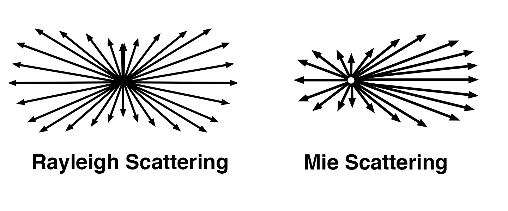

Ray Tracing
Is a technique used in high quality computer graphics renders. It is used for presenting 3D images on a 2D display by tracing a path of light through pixels on an image plane. The main idea behind ray tracing is trying to reproduce the path that each light ray follows in reverse direction from the eye back to its point of origin. In a 3D environment it is quite common that the ray of light collides with certain objects, which leads to various reflections and refractions. Each ray is represented by a mathematical equation that defines its path through space as a function of time. Rays are assigned a color based on the pigments the objects in the scene that the ray passes through and each pixel on the display corresponds to a ray.
Fresnel Equations
Fresnel equations describe the behaviour of light when moving between substances of different refractive properties. The Fresnel’s coefficients can be computed by considering the angle of incidence and transmittance of the ray as well as the refractive indices of both media. Using these we can determine the fraction of reflected as well as transmitted light. When it comes to skin, we consider an unpolarized Fresnel reflectance function. You can find out more about Fresnel equations on wikipedia.
Scattering
As light travels in electromagnetic waves it interacts with particles in the medium it travels in. This interaction results in energy being transmitted and emitted in a direction that differs from the initial direction of the photon. This phenomenon is called scattering.
A perfect example of scattering is the coloration of the sky. When light travels through air it gets scattered by the small particles present in the atmosphere. Since wavelength is inversely proportional to the amount of scattering, the most scattered wavelengths are the shortest ones. In terms of visible light, these are the blue and violet light. Since the sun emits more blue than violet light, the sky appears blue in the result.
Depending on the wavelength of light and the size of the particle it interacts with we distinguish between several types of scattering. For this work, the most important ones are Rayleigh, and Mie scattering. The main difference between these is the direction of the scattered light which is illustrated in the picture below.
Texture Mapping
What is Texture Mapping
When a computer is rendering a frame it has to take into account every possible detail of the mesh of a currently rendered model. Therefore it is obvious that a high detailed (high-poly) mesh will take longer to render, but will appear more realistic.
This is enough for still renders or even animations where the observer does not have to see the final render in real-time, but for games, this would be unacceptable. Does this mean that games are doomed to run only in low frames-per-second or have poor visuals with low level of detail?
Texture mapping is the compromise between photorealism and performance.
Maps are special textures applied to the model that do not influence the final colour of the model, but how the light is reflected from the surface. Texture maps create the illusion of high-poly models via simulating features that are not present on low-poly meshes.

Bump Maps
Bump maps are special types of heightmaps. They are greyscaled textures describing the difference in height of the points the texture is applied to. Grey colour means ‘no change’, while black indicates 'lower' and white 'higher'. This way designers are able to tell the computer to generate a fake mesh.
One of the usages of bump maps is generating pores or small wrinkles. Bump maps do not contain any information about reflection angles.

Displacement Maps
Displacement maps are similar to bump maps. Both of them are height maps; however, while bump maps are creating fake ‘bumps’, displacement maps are actually changing the shape of the mesh by moving the vertices of the model upwards and downwards.
One of the most typical uses of displacement maps is generating a terrain from a texture.

Normal Maps
Normal maps contain RGB information describing the angle information of every point mapped by a texture.
The angle of every point of a texture can be described by its position (done by the model itself) and the vector of its normal. RGB values can describe every component of a vector in 3-dimensional space. This means it is enough to describe the angle and the steepness of all parts of the model.
This can be utilised to smoothen the edges of a model and make models look more natural.
Challenges of Human Skin Rendering
Structure of Skin
Even if it does not seem like it, the structure of human skin is very complex and every little detail affects the final render. If we want to create realistic computer-generated images of skin we have to take all the little complexities into consideration.
Unlike many other materials, skin consists of different layers and each has its own function and behaviour. While skin can be very thin on eyelids and knuckles, it can be rather thick in the lips or belly area with the possibility of fat underneath the surface. Skin can also vary in colour due to different race, age, gender, physical wear, or daily exposure to the sun.
The geometry of skin also plays a great role in realistic representation. Skin has many small natural pores, wrinkles, and hairs. The little skin imperfections like freckles and moles are also a part of the natural looking human skin. All these factors have to be taken into consideration when we intend to recreate human skin.
Geometry of Human Skin

Skin is never perfectly flat and realistic looking models rely heavily on the underlying topology. From a mesh model of body parts, through scars and wrinkles to the smallest details like pores. Having an extremely detailed mesh which captures all the details of skin would be computationally very extensive and it would not work well in reality.
The polygonal model includes a realistically looking physical model of human body parts as well as bigger “details” such as wrinkles, scars, and skin folds. When modeling wrinkles Langer's Lines should be considered to make them look natural. The model should contain information about permanent wrinkles as well as wrinkles that are visible only during some facial expressions.
A higher detail of skin geometry can be achieved using normal maps. Tiny pores, moles, and freckles can be “faked” using bump maps which are able to capture even the smallest details of skin. Even though the use of maps makes the calculations harder, they are more effective than having a highly detailed mesh.
The smallest details are often very crucial to achieve a credible look of the human skin.
Different Types and Imperfections of Skin
There are numerous types of human skin that make the realistic modelling even more difficult. Realistic models have to take into consideration the colour of skin, freckles, wrinkles, hairs (grown or ingrown under the skin). Furthermore, even on one individual, we can find many different types of skin. For example, the skin on lips is obviously different from the skin that we can find on our faces, and these are both different from the skin on the palms of our hands.
Layers of Skin
Human skin is made of three basic layers Epidermis, Dermis and Hypodermis. All of these layers have their own structure, function and also their own sublayers which make the rendering of skin even more computationally extensive.
Epidermis
The epidermis is the outermost layer and therefore is subject to the external environment. Epidermis (or “epi”) is the layer of skin that varies the most in thickness. The thinner this layer is, the more influential are the lower layers. Since the epi has a small oily layer on top, a small amount of uncoloured light is reflected from the surface of skin. However, the reflection is not perfectly mirror-like because the epidermis is rough, containing pores and little bumps. Only about 6-9% of light is reflected directly from the skin. The rest of the light enters the skin, scatters and is either absorbed or exits the skin at a different point (see later). The pigments responsible for the absorption of light are phaeomelanin (red/yellow) and eumelanin (brown/black). The ratio of their concentration in human skin varies from individual to individual.
Dermis
The dermis is a structure that propagates the light further into the skin as well as absorbs it. This layer contains all the blood vessels that can make skin look more reddish in case of a thinner Epidermis, like on the eyelids or cheekbones. The natural chromophore haemoglobin found in blood is the cause of the red colour of blood by the absorption of short wavelength light.

Hypodermis
The hypodermis is the innermost layer of skin and its function is to store fat, collagen and elastin. It keeps the skin in its shape and connects it to underlying bones and muscles. Even though the hypodermis is biologically not considered as part of the skin, it has a major influence on its appearance. Hypodermis loses its ability to store collagen and fat as it ages, thus all tissues lose their strength, which makes the skin look more wrinkly and dry. Since the Hypodermis contains mostly fat, its reflective abilities are strong and a huge portion of visible light that reaches this layer is reflected back to the Dermis and Epidermis.
The geometry of skin also plays a great role in its realistic representation. The skin has many small natural pores, wrinkles and hairs. Little imperfections like freckles and moles are also part of the natural looking human skin. All these factors have to be taken into consideration if we intend to create a precise recreation of human skin.
Introduction to models
Previously, we could see the wide scope of problems associated with rendering realistic human skin. Its layers, chemical composition, and high level of microstructures make it very complex to model and approximate.
In this section, we will discover some of the novel approaches to rendering realistic human skin. Namely, we will take a closer look at a biophysically-based spectral model proposed by Aravind Krishnaswamy and Gladimir V. G. Baranoski which heavily relies on stochastic modelling. We will examine Craig Donner’s and Henrik Wann Jensen’s spectral BSSRDF which introduces various improvements by highly effective approximations. Following these two models, we will also take a peek at how to model wrinkles using a simple method for modelling wrinkles on human skin designed by Y. Bando, T. Kuratate, and T. Nishita.


The BioSpec Model
Main Features
The BioSpec model was developed by Aravind Krishnaswamy and Gladimir V. G. Baranoski as a part of their research paper called A biophysically-based spectral model of light interaction with human skin.
Perhaps the main feature of this model is that it is modelled by a random walk process of the light rays that travel through the layers of skin. This is achieved by using random variables to decide whether and how light is reflected, refracted, transmitted, or absorbed. The next key feature is that it uses a large range of biologically relevant coefficients to accurately model the behaviour of the light rays in different layers of skin. We will take a deeper look at these features in the next section.
Random Walk
The BioSpec model uses ray tracing to follow the light rays in their random walk process. Each ray is assigned a wavelength as we will later see it is a necessary parameter for computing the events happening to the given ray. There is a total of five interfaces that a ray goes through in its random walk.
These are:
- air \(\leftrightarrow\) stratum corneum
- stratum corneum \(\leftrightarrow\) epidermis
- epidermis \(\leftrightarrow\) papillary dermis
- papillary dermis \(\leftrightarrow\) reticular dermis
- reticular dermis \(\leftrightarrow\) hypodermis
These transition interfaces are the same as the ones real light travels through when interacting with human skin. By separating the interfaces the BioSpec model is able to more accurately alter the behaviour of the light rays as it can assign different biological coefficients to interfaces. This raises the accuracy, but also the complexity of the model.
In each of the layers, a given ray can be reflected and transmitted, scattered, or absorbed. Now, we will deeper investigate how this is achieved in the model.

The BioSpec Model
Reflectance and Transmittance
When it comes to reflectance and transmittance at the edges of the interfaces the model relies on Fresnel equations. After computing the coefficient \(F\) we generate a random number \(\xi\) (from 0 to 1). If \(\xi \leq F\) then we generate a reflected ray using the law of reflection. Otherwise we generate a refracted ray using Snell’s law.
When considering the reflected light we also have to account for the folds present in the stratum corneum. These can be conveniently represented as ellipsoids where the shape and size of the ellipsoid is governed by random variables. Therefore, we do not reflect from the stratum corneum as if it was perfectly flat but we reflect from a randomly curved ellipsoid instead.
Note that the generation of the random variables is an example of the stochastic nature of this model. In general there is a total of 11 random variables in the model.
Scattering
The BioSpec model differentiates between scattering in the layers until and including epidermis and after epidermis.
Scattering in the stratum corneum and epidermis involves perturbation of the ray in both the polar and the azimuthal angles. When it comes to the azimuthal angle the scattering is symmetric; therefore it suffices to generate a random angle \(2\pi*\xi\). The polar angle is acquired by a randomized table lookup. Bruls and Leun have performed measurements in these layers using which we can construct the table. For each wavelength, we store the measured fractions of scattered light as indices and their corresponding angle. Generating a random variable, scaling it to the size of the table, and using its integer part we can now acquire the necessary angle.
This method is promised to be more accurate than the use of data-fitting according to Aravind Krishnaswamy and Gladimir V. G. Baranoski. Note that most of the scattering happening in these layers is Mie scattering due to the size of the particles the light interacts with. Therefore the light is mainly scattered in the forward direction.
In the remaining layers the model tests for Rayleigh scattering as with the decreasing size of particles it becomes the dominant type of scattering. Firstly, we compute the amount of scattering that occurs given the wavelength of the ray and the indices describing the biological properties of the layer. Namely the index of refraction of the medium, the index of refraction of the fibers, the density of the fibers, and the thickness of the medium.
We can associate the amount of the scattering with the probability that the scattering will occur by \(1 - \exp\left(R\left(\lambda\right)\right)\). Then we generate a random variable to decide whether to account for Rayleigh scattering or not.
The BioSpec Model
Absorbtion
After the ray is scattered it is tested for absorption. This is achieved by estimating the ray free path length of the tissue and comparing it to the actual thickness of the medium. If it is shorter than the thickness the ray is absorbed, otherwise it gets propagated to the next layer. Note that the last layer, hypodermis, is considered to be highly reflective, therefore the rays get reflected rather than absorbed in the final layer.
Problems
Our explanation so far has efficiently hidden all the biological indexes the model needs; however, in reality, it requires almost two dozen in order to accurately describe the aforementioned phenomenon. As there is a large number of different types of skin it makes the BioSpec model inflexible. In the following section, we will look at a model which addresses these issues.
Results
A Spectral BSSRDF
What is BSSRFD?
In order to understand what is a BSSRDF we first need to understand what a BSDF is. A BSDF is a combination of a bidirectional reflectance distribution function (BRDF) and bidirectional transmittance distribution function (BTDF). These are both described as a ratio of the radiance of the reflected light and the irradiance of the incoming light. Combining these functions we create a BSDF. To get a BSSRDF we also need to account for phenomenon such as scattering, hence the name bidirectional scattering-surface reflectance distribution function. The model created by Donner and Jensen can be conveniently described as a BSSRDF.
Main Features
The main distinction from the previous model is that the BSSRDF suggested by Donner and Jensen tries to approximate physical interactions of light while maintaining a very high level of realism. Instead of considering a large number of tissues and interfaces it takes into account only two. The dermal and the epidermal layers.
The next distinction is that there are only four biologically relevant parameters which make this model easily adjustable to different skin types. The parameters are oiliness of the skin, hemoglobin concentration, melanin concentration, and a blend factor between different types of melanin. The model also addresses texturing which was not solved by the BioSpec model.
Reflection
Recall that in the previous section we had to model the reflection from the surface of skin using ellipsoids. In this model, however, we make use of a BRDF which was shown to give good results when considering the reflection from the human skin. The BRDF is called the Torrance-Sparrow microfacet BRDF. You can find out more about this BRDF here.
In order to estimate the average reflectance of a given point, we integrate the BRDF over all the outgoing light directions. Specifically, we integrate over the outgoing hemisphere. This gives us an idea of the amount of light that was reflected. We assume the remaining light to be transmitted into the deeper level.

A Spectral BSSRDF
Scattering and Absorption
As light passes through the surface of the skin the model approximates the rest of the physical phenomenon using only two layers. The epidermis and the dermis. The important distinction between these two layers is that the epidermis consists mainly of melanin and the dermis of hemoglobin. Both of these substances play a great role in the scattering and absorption of light.
In the previous model, we tried to exactly follow each beam of light as it travels through the layers of skin. This model approaches subsurface scattering by introducing the concept of diffusion profiles.
Diffusion profiles present an approximation of how light scatters beneath the surface of highly scattering translucent materials such as skin. A simple way of thinking about this new idea is by considering an experiment where we point a beam of a very thin white laser to a flat surface. Since some light goes beneath the surface and scatters back, we see a glow around the point where the laser hits the surface. Diffusion profiles tell us how much light returns from the surface as a function of angle and distance from the centre. These profiles are colour dependent.
Diffusion profiles can be measured, however, they are also expressible analytically based on the features of the medium the light gets scattered in. Using this new way of expressing subsurface scattering it now suffices to sum across all the points where light enters skin considering the reflectance and also the diffusion profile of the given area.
Texturing
In contrast from the previous model this model also accounts for the texture of the rendered skin. Using texture maps we can easily add texture to the rendered skin. The problem is that most maps also include the coloration caused by the hemoglobin and melanin. In order to fix this problem, the model normalizes the texture map by the already computed total reflectance of skin. This way we only see the differences caused by factors other than the actual color of the skin given by the model.
Wrinkles
Introduction to Wrinkles
An important feature of skin that enhances realism are wrinkles. Although we saw that the model developed by Donner and Jensen was able to add texture by using texture maps, we would like to investigate how to generate these in a more dynamic manner. A paper called A simple method for modelling wrinkles on human skin by Y. Bando, T. Kuratate, and T. Nishita introduces a way of achieving this and thus we shall investigate it in this section.
Properties of Wrinkles
The model distinguishes between two types of wrinkles. Fine-scale wrinkles, and large-scale wrinkles. Fine-scale wrinkles cover the whole body and are much harder to spot by eye than large-scale wrinkles, which are usually associated with a certain body part such as the forehead.
When it comes to fine-scale wrinkles the interesting properties they share are that the furrow lines usually run in both directions and the intersection of two furrow lines becomes an endpoint of either. Concerning large-scale wrinkles perhaps the most important property is the preservation of skin volume. Notice that skin is incompressible and so it is shrunk around large-scale wrinkles. We will take this into consideration when modelling the shape of large-scale wrinkles.
Triangle Mesh
This model uses a triangle mesh to represent a particular body part. Wrinkles are then modeled on top of this mesh. In order to acquire the mesh, we scan the particular body part and then we project it into 2D.
Wrinkles
Fine-Scale Wrinkles
The key of modelling fine-scale wrinkles is the formation of a direction field on the particular body part. This direction field represents the directions of furrows at particular vertices of the triangle mesh. The user specifies a couple of direction vectors and then the rest is interpolated based on the triangle mesh.
Carving the wrinkles happens by carving the furrows along the direction vectors. The output of the model is a height image which represents the depth of the carved wrinkles. This can be represented as a grayscale image which is initialized to white, and each wrinkle makes its positions more grey. The model does not allow wrinkle generation from points that already contain wrinkles. This is achieved by an occupancy image which is always updated throughout the wrinkle generation algorithm. Each position is either 0 or 1 so this way we do not start a wrinkle from a position already wrinkled.
Before examining the actual algorithm that generates the wrinkles we need to introduce six new attributes of fine-scale wrinkles. These are the perturbation angle, the length of the furrow segment, the depth of the furrow, the width of the furrow, and the distance between adjacent furrows. The intuition behind these parameters is that they are controlled by the magnitude of the vector field in the given area. Should the magnitude be large, the wrinkles become more oriented, longer, deeper, wider, and the distance between them increases. The exact opposite happens for smaller magnitudes.
Now let’s look at the actual algorithm.
- If possible pick a starting point P. Compute the number of furrow segments n needed for the furrow based on the magnitude of the direction field. Compute the direction d of the furrow by interpolating the direction vectors of the vertices of the triangle P lies in.
- Iterating over n do the following steps:
- Add the perturbation angle to the direction.
- Let Q be the end point of the given segment. If PQ intersects some other furrow, then set Q to be the intersection point and n to 0. This follows the property of fine wrinkles which states that either furrow has to end at the intersection.
- Draw a line on the grayscale image representing PQ with its depth and width obtained from the magnitude of the vector field.
- Record the occupied area in the occupancy image together with the calculated distance from the adjacent furrows.
- Set P to Q and continue with step 3 if n > 0.
This algorithm is performed by randomly picking starting points P until a lot of furrows fail to generate. This happens when picking a starting point becomes probabilistically hard due to the occupancy image.

Wrinkles
Large-Scale Wrinkles
Modelling large-scale wrinkles is much more challenging from the perspective that they can be quite distinct depending not only on the area of the skin but also on the given person. For this reason, the model cannot create them in bulks, but it has to assign and generate them one by one. The model achieves this by having users draw cubic Bezier curves on the surface of the skin. Then, the model creates a cross-sectional wrinkle shape function \(S(l)\). Here \(l\) is the perpendicular distance from the Bezier curve.
\(S(l)\) can be defined as: $$ S(l) = d\left(\frac{l}{w}-1\right)\exp\left(-\frac{l}{w}\right) $$

Where \(d\) is the depth and \(w\) is the width of the wrinkle. This definition of \(S(l)\) has several advantages. Firstly, it is controlled by very intuitive parameters. Secondly, it models the fact the skin bulks around the edges of the wrinkle. Finally, notice that:
This property ensures the preservation of the skin volume.
Maximizing realism while maintaining interactivity
Introduction
Simulating the layers of skin (epidermis, dermis etc.) and approximating its behaviour plays a very important role in human skin rendering. By dividing it up to homogeneous thin slabs, researchers managed to achieve incredibly realistic results, however this realism comes at a great cost. Today’s state-of-the-art techniques for rendering multilayer translucent materials normally take seconds or even minutes to render. This makes them unusable in certain situations, such as in computer games or other applications where multiple images need to be rendered in a second.
Most real-time methods for rendering translucent objects require precomputation of light transport on certain points of the surface. This approach however requires fixing the geometry of the model at precomputation time, not allowing deformation to the object itself, which makes it unusable for scenes with fully general animation or deformation (for example in computer games the shapes of objects often change based on user interaction with the environment).
In their paper, Dr. Eugene d’Eon and his colleagues present a new efficient formulation of the diffusion profile approximation technique designed by Donner and Jensen achieving real-time rendering of skin in approximately 30 frames per second without the need of any precomputation. The key idea behind it is approximating the diffusion profiles of the layers of skin as a linear combination of Gaussian basic functions. In other words, they are using sums of Gaussian functions to accurately approximate the behaviour of illuminated skin. This method is in practice much faster than previously known techniques providing highly realistic results.
Maximizing realism while maintaining interactivity
Fast approximate diffusion profiles
The key observation made by d'Eon et al. is, that sums of a small number of Gaussians work very well for approximation of diffusion profiles \(R(r)\), where \(r\) is the radius of the circle from which light is gathered. In most cases very good approximations can be done using four Gaussians. This observation is extremely useful in practice, because using some unique properties of Gaussians subsurface scattering can be computed very efficiently.
The aim of this method is to find for each diffusion profile \(R(r)\), \(k\) Gaussians with weights \(w_i\) and variances \(v_i\) such that:
Using this method once we know the diffusion profile \(R(r)\) which we want to use for our render, we find \(k\) Gaussians that minimize the following:
To measure the errors of their approximations, d’Eon et al. used a metric, which gives a root-mean-square ratio between the error in fitting the sum of Gaussians to \(R(r)\) and the target diffusion profile itself: